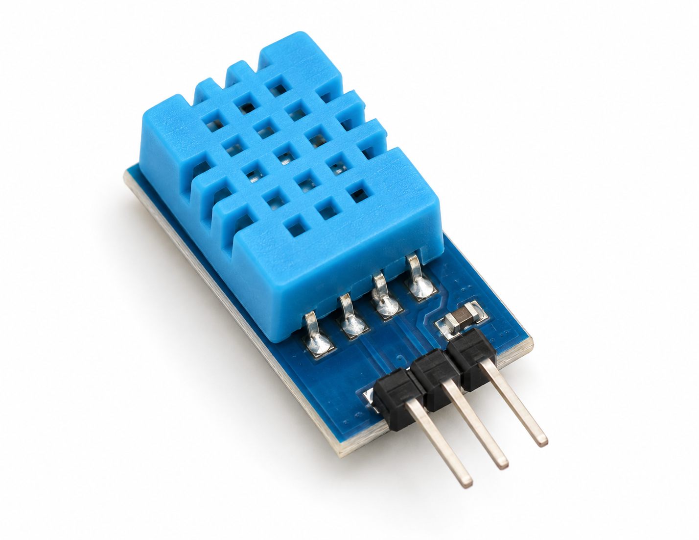
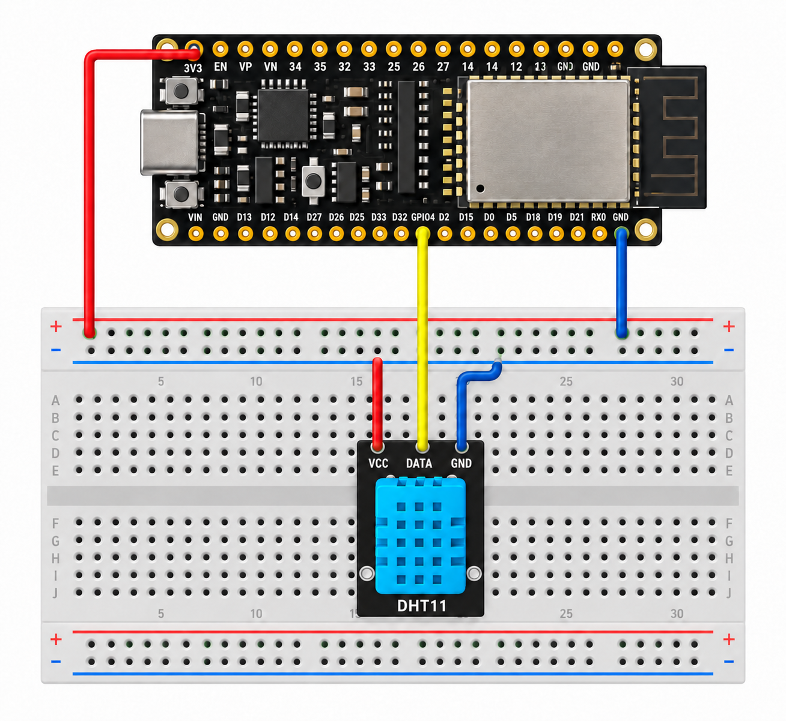
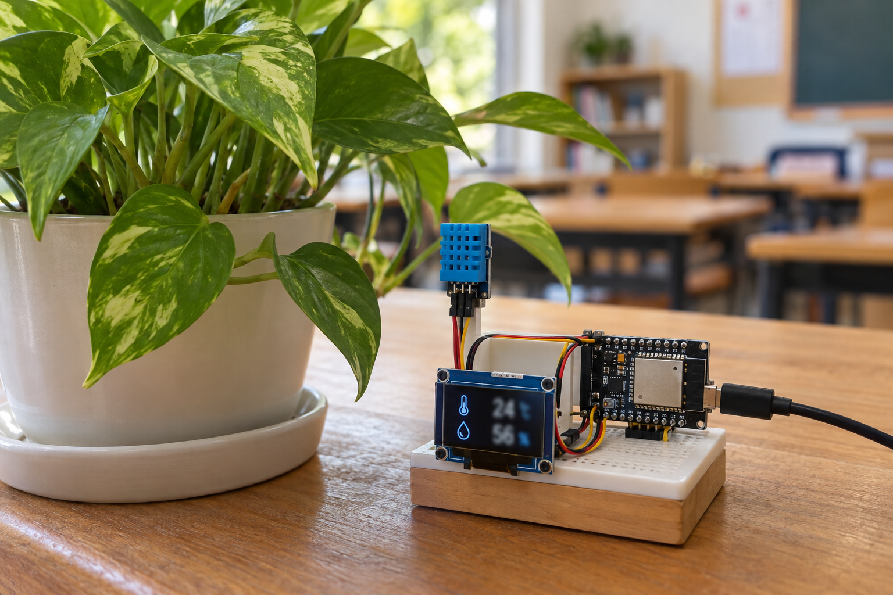

02 / 感應器
DHT11 感測器介紹
DHT11 是一款低成本的數位式溫濕度感測器，可以同時測量空氣溫度與相對濕度。
DHT11 內部包含溫度感測元件、電容式濕度感測元件、內部校正資料與數位訊號處理電路。感測器會將量測結果轉換成數位訊號，再透過一條 DATA 資料線傳送給 ESP32。
DHT11 適合入門與一般環境監測，但不適合要求高精度的應用。
不同廠牌或副廠模組的規格可能略有差異。參考：DHT11 技術資料、Olimex DHT11 模組資料
感應器教學 / DHT11
從接腳、接線到函式庫與完整程式，完成第一個環境感測器實作。

01 / 教學目標
認識 DHT11 溫濕度感測器的功能。
了解 DHT11 的接腳與工作方式。
將 DHT11 正確接到 ESP32S。
在 Arduino IDE 安裝所需函式庫。
撰寫程式讀取溫度與相對濕度。
將感測資料應用於風扇控制、環境監測或警報系統。
02 / 感應器
DHT11 是一款低成本的數位式溫濕度感測器，可以同時測量空氣溫度與相對濕度。
DHT11 內部包含溫度感測元件、電容式濕度感測元件、內部校正資料與數位訊號處理電路。感測器會將量測結果轉換成數位訊號，再透過一條 DATA 資料線傳送給 ESP32。
DHT11 適合入門與一般環境監測，但不適合要求高精度的應用。
不同廠牌或副廠模組的規格可能略有差異。參考：DHT11 技術資料、Olimex DHT11 模組資料
03 / 開發平台
ESP32S 是以 ESP32 晶片為核心的微控制器開發板，具有 Wi-Fi、Bluetooth、多組數位輸入輸出腳位、類比輸入功能與低功耗模式，適合物聯網應用。
本教學使用 GPIO4 連接 DHT11 的 DATA 腳位。ESP32 的 GPIO 工作電壓為 3.3V，因此本教學建議 DHT11 使用 ESP32 的 3.3V 供電。
04 / 接腳說明
當感測器正面格柵朝向自己、接腳朝下時，常見排列如下：
┌─────────────┐ │ DHT11 │ └─────────────┘ 1 2 3 4 VCC DATA NC GND
VCC 是電源輸入，DATA 是數位資料輸出，NC 未連接，GND 接地。
市面上常見的 DHT11 模組已經焊接電阻，通常只有三個接腳：
不同廠牌模組的接腳排列可能不同，實際接線前應確認模組上的標示。
05 / 接線圖

若使用裸 DHT11，DATA 與 3.3V 之間建議加上 4.7kΩ～10kΩ 的上拉電阻。若使用已經焊好電阻的三腳位 DHT11 模組，通常不需要另外加裝上拉電阻。
ESP32 的 GPIO 不耐受 5V。初學時建議直接使用 3.3V 供電，並確認 ESP32 與 DHT11 共用 GND。
06 / 函式庫
開啟「工具」→「管理程式庫」。
搜尋並安裝 DHT sensor library，發行者選擇 Adafruit。
另外搜尋並安裝 Adafruit Unified Sensor。
開發板選擇 ESP32 Arduino → NodeMCU-32S。
07 / 完整範例
#include <Adafruit_Sensor.h>
#include <DHT.h>
// DHT11 DATA 腳位接到 ESP32 GPIO4
#define DHTPIN 4
// 使用 DHT11
#define DHTTYPE DHT11
// 建立 DHT 感測器物件
DHT dht(DHTPIN, DHTTYPE);
// 記錄上一次讀取時間
unsigned long previousMillis = 0;
// DHT11 建議至少間隔 1 秒，這裡使用 2 秒
const unsigned long interval = 2000;
void setup() {
Serial.begin(115200);
Serial.println();
Serial.println("DHT11 溫濕度感測器啟動中...");
dht.begin();
// 等待感測器穩定
delay(2000);
}
void loop() {
unsigned long currentMillis = millis();
// 尚未達到讀取間隔時，不讀取感測器
if (currentMillis - previousMillis < interval) {
return;
}
previousMillis = currentMillis;
// 讀取濕度
float humidity = dht.readHumidity();
// 讀取攝氏溫度
float temperature = dht.readTemperature();
// 判斷資料是否讀取成功
if (isnan(humidity) || isnan(temperature)) {
Serial.println("讀取 DHT11 失敗，請檢查接線！");
return;
}
Serial.println("----------------------------");
Serial.print("溫度：");
Serial.print(temperature);
Serial.println(" °C");
Serial.print("濕度：");
Serial.print(humidity);
Serial.println(" %RH");
}#define DHTPIN 4 表示 DHT11 的 DATA 腳位連接到 GPIO4；#define DHTTYPE DHT11 表示目前使用 DHT11。若改用 DHT22，必須改成 DHT22。
isnan() 用來判斷感測器是否傳回無效資料。DHT11 建議不要過於頻繁讀取，本範例使用兩秒讀取一次。
08 / 序列埠監控
上傳程式後，開啟 Arduino IDE 的序列埠監控視窗，鮑率設定為 115200。
DHT11 溫濕度感測器啟動中... ---------------------------- 溫度：27.00 °C 濕度：62.00 %RH ---------------------------- 溫度：28.00 °C 濕度：63.00 %RH
DHT11 的解析度通常為整數，因此顯示的溫度與濕度不一定會有小數。

09 / 問題排除
檢查 DATA 是否接到 GPIO4、程式中的 DHTPIN 是否為 4、VCC 是否接 3.3V、GND 是否共地，以及兩個函式庫是否都已安裝。
可能是 DATA 線沒有上拉電阻、感測器接腳接反、使用 5V 訊號輸入 ESP32、DATA 線太長或感測器損壞。
避免感測器靠近 ESP32 晶片、穩壓器、風扇或熱源，並確認電源穩定與讀取頻率沒有過快。
10 / 使用情境
每兩秒讀取一次溫度和濕度，搭配 OLED 或網頁顯示資料；溫度高於 30°C 或濕度高於 70%RH 時顯示提醒。
當溫度超過設定值時啟動風扇。ESP32 GPIO 不應直接連接馬達或大型風扇，應使用繼電器模組、電晶體或 MOSFET。
溫度過高時啟動排風扇，濕度太低時啟動加濕器；DHT11 應放在通風且不會淋水的位置。
利用 ESP32 內建 Wi-Fi，將 DHT11 資料上傳到 MQTT、ThingSpeak、Blynk、自製網頁或其他雲端資料庫。
11 / 課程延伸
可以使用 OLED 顯示溫度和濕度、用 LED 顯示環境是否過熱、用蜂鳴器製作高溫警報、使用繼電器控制風扇，或將資料上傳到 MQTT。
重點整理
DHT11 VCC → ESP32 3V3 DHT11 DATA → ESP32 GPIO4 DHT11 GND → ESP32 GND
程式中最重要的設定是 #define DHTPIN 4 與 #define DHTTYPE DHT11。DHT11 適合用來學習感測器、微控制器與物聯網的基本概念；若未來需要更高精度，可升級至 DHT22、AHT20 或 SHT31。